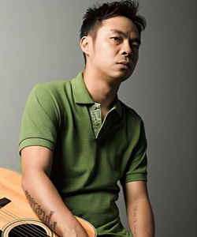
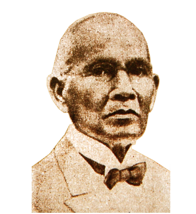
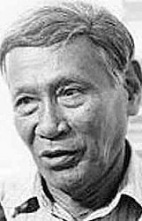

Local Composers
In 1978, Ryan Cayabyab joined the Metro Pop Music Festival competition with the song "Kay Ganda ng Ating Musika." The song was performed by Hajji Alejandro and won the top prize. Healso said that his work with Basil Valdez was one of the most memorable. He wrote "Paraisong Parisukat" and "Tuwing Umuulan at Kapiling Ka." Cayabyab has worked with many popular singers such as Pilita Corrales, Jose Mari Chan, Basil Valdez and more.
His works extend from commissioned full-length ballet productions, theater musicals, choral pieces, a Mass set to unaccompanied refrain, and symphonic pieces, to commercial recordings of well known music, film scores and tv specials. Cayabyab's current extend incorporates the Ryan Cayabyab Vocalists (RCS), a bunch of seven youthful grown-up vocalists comparable to his gather Smokey Mountain within the early 1990s. After FreemantleMedia chosen not to resume the Philippine Icon establishment, Cayabyab exchanged to match appear Pinoy Dream Institute (season 2), supplanting Jim Paredes as the show's dean. PDA 2 begun on June 14, 2008. He too got to be the chairman of the board of judges for GMA Network's musical-reality appear To The Beat.
In 12 years of the industry, Ogie Alcasid is known to be a singer-songwriter in the Philippines. His hit singles include “Nandito Ako”, “Sa kanya” and “Bakit ngayon ka lang” have made him more famous in the country. Leaving OctoArts Records for MCA/Universal, his album Then and Now is acclaimed as the best of his career. It features seven Alcasid original songs along with seven classic love songs, indicating an update of "I've Never Been to Me," a hit for Charlene.
Alcasid debuted as a singer in 1989 with the release of his self-titled album. Ogie Alcasid reached gold record status, while his debut single "Nandito Ako" (I Am Here) was awarded "Song of the Year" by a local radio station Magic 89.9. He has since released 18 albums, including a Christmas album (Larawan ng Pasko/Images of Christmas, 1994), a live album (OA sa Hits (Live), 2002), and four greatest hits albums. He has received a total of twelve gold records, three platinum records, and three double platinum records.

Alfonso "Chito" Y. Miranda Jr. is a singer-songwriter and a singer of the leading band of “Parokya ni Edgar”. He is from Manila and currently 45 years old. His famous compositions includes “Gitara”, “Halaga”, “Bagsakan”, “Para sayo”, “Harana” and many more.
Afterward on, Parokya ni Edgar performed routinely in Club Dredd, one of the popular clubs in Manila amid that time. The band gradually picked up ubiquity amid the stature of the Filipino shake blast, with the neighborhood shake community opening up to the impact of outside grunge acts such as Nirvana, Pearl Stick and Soundgarden. Eventually, the late overseeing executive of Widespread Records, Bella Dy Tan and Alexis Tan marked them as contract craftsmen after seeing one of their exhibitions at Club Dredd. The band gathered a triple platinum grant for their to begin with collection Khangkhungkherrnitz.

Marcelo Quiteria Adonay was a Filipino performer, organist, melodic, chief church composer, and music educator. His popular showstoppers are Amazing Mass and Te Deum. His other devout compositions incorporate "O, Vita Jesus"; "A San Juan Bautista"; "Resposarium", composed in 1894; "Hosana", 1889; and "Nuestra Señora de Antipolo", which was composed in 1909.
By 1893, Adonay was one of the foremost noticeable and fruitful local Filipino artists in Manila. Aside from his church music obligations, he too instructed and guided music. Adonay instructed music at Colegio de Santa Catalina, Colegio de Santa Rosa, Colegio de San Sebastian, Liceo de Manila and La Campañia de Jesus. One of his understudies was a conspicuous businessman and music benefactor Francisco L. Roxas, who will afterward on be executed for conspiracy amid the Philippine Insurgency. He mentored renowned worldwide composer Francisco Beltran Buencamino Sr. at Liceo de Manila. He moreover empowered and recognized the melodic ability of famous violinist Ernesto Vallejo, whom Adonay talented his to begin with violin.
Rico Blanco is a Filipino singer-songwriter, record producer, actor and entrepreneur He was born on March 7, 1973 from Ermita, Manila. His notable works include “Kisapmata”, “Revolution”, “Balisong” and “Ulan”. He began his careeras one of the founding members, and served as the chief songwriter, vocalist, guitarist and keyboardist of Filipino rock band Rivermaya.
On June 12, 2008, Warner Music Philippines, propelled Rico Blanco's to begin with single "Yugto" which checked his section within the Filipino music industry as a solo craftsman. Pundits and music fans promptly salute it as a "neo-epic". The melody won a have of grants, among them 4 major Awit grants counting Melody of the Year. His to begin with collection titled Your Universe was discharged on Admirable 8, 2008. The 10-track CD may be a one of a kind combination of different sounds, among them the ethno-rock "Yugto", the heart-tugging title track "Your Universe", the rockabilly/punk feel of "Ayuz", the sweet, Pinoy-folk "Para Hindi Ka Mawala", and the sing-alongsong of devotion "Antukin". Moreover eminent is his return to his roots as a console player as prove by the implantation of synthesizer and electronic components all through the collection.

Levi Celerio is a gifted individual. He is a composer, lyricist and the one who made the popular melody “Pasko na Naman”, “Ang Pasko ay Sumapit”, “Kahit Konting Pagtingin”, “Ang Pipit”, ”Itik-Itik”, “Duwangin Moment Hirang” and numerous more. He worked with Lucio D. San Pedro within the Verses of “Sa Ugoy ng Duyan”. He composed verses for more than 4,000 Filipino society, Christmas and cherish melodies, counting numerous that have been noted to be as motion picture titles.
Among Unique Pilipino Music (OPM) melodies he composed are "Ikaw", "Kahit Konting Pagtingin", "Saan Ka Man Naroroon? (1968)". He composed the verses of the Filipino cradlesong "Sa Ugoy ng Duyan". He moreover composed society tunes counting "Ako ay May Singsing", "Ang Pipit", "Dungawin Moment Hirang", "Itik-Itik", "Pitong Gatang", and "Waray-Waray" Sa Ugoy ng Duyan", in specific, was a collaboration with Lucio San Pedro, a individual National Craftsman.
Rey Valera is known to be a singer-songwriter. He is from Meycauayan, Bulacan. His notable compositions include “Malayo pa ang umaga”, “Maging sino ka man”, “May bukas pa”, “Pangako sayo” and many more. He is currently the head judge of the singing contest segment "Tawag ng Tanghalan" in a variety noontime show It's Showtime.
Rey was film scoring motion pictures amid his singing career, but after the inconvenience his quack has caused, Rey centered on his melodic coordinating career. He especially enjoyed scoring music for activity movies, giving battle scenes and chase groupings quick paced, rock-themed music, which reflects his roots as a shake band member. Rey's tunes made marks too as subject melodies and motion picture titles. These incorporate a few Sharon Cuneta motion pictures such as Maging Sino Ka Man, Pangako sa 'Yo, Kahit Wala Ka Na, Tayong Dalawa; Sinasamba Kita,Romansa, Hiwalay; Carnap Lord, Barumbado, and Child Ama; Pasong Tirad, The Gregorio del Pilar Story, Tampisaw.

Yoyoy Villame is a singer-songwriter, actor and comedian. He is notable from the songs “Butse Kik”, “Si Felimon”, “Magellan”, “Mag exercise tayo” and many more.
He is from Calape, Bohol and died on May 18, 2007. Villame composed "Philippine Topography", which records 77 major islands, areas, cities, regions, and towns within the Philippines from north to south.He too set up a cherish group with "Barok Labs Dabiana" and celebrated his angler father with "Piyesta ng Mga Isda". His tune"Take It, Take It" ("Pasko ng Disaster") took shots at the Manila Film Celebration trick within the 1990s. He made more than 25 collections and won a few deals grants, among them a twofold platinum for his collection Tirana My Expensive and a platinumfor McArthur and Dagohoy in 1991. He too won Best Oddity Grant for "Piyesta ng mga Isda" at the 1993 Awit Grants. His long list of hits and his engaging fashion of music earned him the title of 'King of Philippine Oddity Songs'.
Lito Camo is a singer-songwriter and was a native of Bongabong, Oriental Mindoro. “His works are “Boom tarat tarat”, ”Spaghetti Song”, “Otso otso”, “Wowowee”, “Pera o bayong”, “Chimpoy champoy”, “Beep beep beep” and many more song compositions. He was a mainstay in the GMA Channel sitcom Show Me Da Manny starring boxer Manny Pacquiao.
The man from Bongabon, Oriental Mindoro also composed a few tunes for world boxing champ Manny Pacquiao, one of which got to be a hit: “Para Sa ‘Yo (Ang Laban Na Ito).” Its turning into a hit may have energized the champ to require Lito along in his title battles overseas. There are distributed pictures of Manny’s triumph hoopla in which Lito is show. The composer moreover got to be a backbone in Manny’s GMA 7 week after week sitcom Appear me da Manny.
Joy Nilo Tony born January 11, 1970,currently 51 years old from Oriental Mindoro, Philippines. He is a singer-songwriter who specializes in a cappella choral music. The sacrosanct composition “Amami”, a suite of 6 anthems based on the Lord’s Prayer, is popular among international choirs, and so are liturgical music such as “O Magnum Mysterium”, “Agtalnaca”, “Denggem”, “Apo”, “Isalacannacam”, and “Umawit Kayo Sa Panginoon.”
His sacrosanct composition Amami, a suite of 6 songs of devotion based on the Lord’s Supplication, is well-known among universal choirs, and so are ceremonial music such as O Magnum Mysterium, Agtalnaca, Denggem, Apo, Isalacannacam, and Umawit Kayo Sa Panginoon. Philippine Choirs competing universally sing his modern choral compositions and courses of action of folktunes Bongbongtit, Kaisaisa Niyan, Pakawanem Ti Basbasolmi, Duayya Ni Ayat, Pakiusap, Malinac Lay Labi, and Oalay Manoc Con Taraz. His well known church choir works Make My Life a Supplication, Radiance, Splendor and Grandness, and Come Live in Me are customary parts of church choir collections.

{kind=link}
{kind=link}
{kind=link}
{kind=link}
{kind=link}
{kind=link}
{kind=link}
{kind=link}
{kind=link}